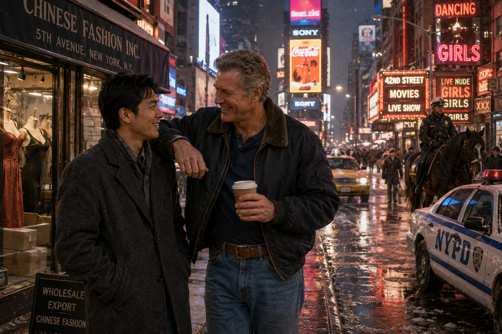

我的美國朋友，大衛·約翰遜My American Friend, David Johnson My American Friend, David Johnson我的美國朋友，大衛·約翰遜
微型小說（6）Microfiction (6)
美國， 美國人，對我來說，一直是個謎。
有人說，美國是戰爭販子，到處打仗，讓世界不得安寧；也有人說，美國人很了不起，為了別人的自由，可以把命丟在異國他鄉。二次世界大戰時的諾曼底登陸，成千上萬美國年輕人，倒在海灘上，血染大西洋，為打敗德國法西斯，付出年輕生命。
這些說法，我從小都聽過。可是對我，一個生長在泰國的中國人來說，美國始終像一個遙遠而模糊的影子。它在報紙上，在電影裡，在大人們談生意時，偶爾提到的市場版圖中，卻不在我的生活裡。
直到上個世紀七十年代末，我剛剛大學畢業，父親把我叫到書房，對我說：「你去美國吧。」
父親的語氣很平靜，卻沒有商量餘地。他說，家裡做中國女裝進出口生意多年，東南亞市場已經穩定，下一步要開拓美國市場。美國人有錢，女人愛漂亮，女裝生意要做大， 要發展， 不可能繞過紐約。你年輕，英文也不錯，又讀過書，有知識，去那裡開分公司，先把路探出來。
就這樣，我帶著一隻皮箱，幾本樣品冊，一肚子不安，來到紐約。
美國， 美國人，對我來說，一直是個謎。
有人說，美國是戰爭販子，到處打仗，讓世界不得安寧；也有人說，美國人很了不起，為了別人的自由，可以把命丟在異國他鄉。二次世界大戰時的諾曼底登陸，成千上萬美國年輕人，倒在海灘上，血染大西洋，為打敗德國法西斯，付出年輕生命。
這些說法，我從小都聽過。可是對我，一個生長在泰國的中國人來說，美國始終像一個遙遠而模糊的影子。它在報紙上，在電影裡，在大人們談生意時，偶爾提到的市場版圖中，卻不在我的生活裡。
直到上個世紀七十年代末，我剛剛大學畢業，父親把我叫到書房，對我說：「你去美國吧。」
父親的語氣很平靜，卻沒有商量餘地。他說，家裡做中國女裝進出口生意多年，東南亞市場已經穩定，下一步要開拓美國市場。美國人有錢，女人愛漂亮，女裝生意要做大， 要發展， 不可能繞過紐約。你年輕，英文也不錯，又讀過書，有知識，去那裡開分公司，先把路探出來。
就這樣，我帶著一隻皮箱，幾本樣品冊，一肚子不安，來到紐約。
那時的紐約，和今天很多人看到的完全不一樣。第五大道當然繁華，高樓如林，櫥窗明亮，百貨公司裡香水味和皮革味混在一起，一看就是世界最大的繁華， 現代城市之一。
可是只要拐幾條街，另一個紐約就立刻冒出來。牆上到處塗鴉，地鐵站裡尿騷味瀰漫，街角有人賣熱狗，也有人乞討；有人吵架，有人默默靠著牆，眼神空空，不知道是喝醉了，還是吸了什麼藥物， 發呆呢。
那個年代的 Times Square 和四十二街，更不是今天遊客看到，和拍照的地方。那裡霓虹燈很亮，卻不是高級的亮，而是一種曖昧、髒亂、帶著汗味和酒味的亮。成人電影院一間挨一間，門口貼著大幅女人身體海報；脫衣舞酒吧燈牌閃爍；街邊站著濃妝女人，超短裙，高跟鞋，衣不蔽體，眼睛看著過路男人。
街上警察很多，尖利的警笛聲， 時刻響起，令人側目。還有騎著高頭大馬的巡警，馬蹄在路上敲出沉悶聲音，好像這座城市一邊是縱情放縱享樂，一邊又不得不時刻保持高度警惕 ，維持正常秩序。
我那時年輕，看著這一切，既覺得新鮮，也覺得有些緊張。這就是美國嗎？這就是世界第一強國的心臟嗎？
公司最後選在第五大道，租下一座獨棟四層小樓，一層前面做 showroom，也可以零售， 試探市場反應。地下室做倉庫。 二樓是Office， 三樓，四樓自己住， 還有幾個房間可以出租， 以後可以賺回一些租金。
這裡說一點多餘的話， 在八十年代初， 紐約因為治安環境不好， 大批公司遷出， 到新澤西， 或者其它州， 紐約地產市場一片哀嚎。 大批商業房地產跌成白菜價。 我們租住的樓房也在出售， 要價只有四十五萬美元。
我看是個機會， 就強烈建議老爸，把這個獨棟小樓買下。 老爸在泰國， 有多年的商場生意經驗，知道地產的重要性。 如此低價買下那麼好的黃金地段的一棟樓房， 不但省租金， 而且按照一般規律， 紐約的商業房地產，以後升值是絕對的。
老爸開始籌措資金， 最後全額現金買下了這棟樓房， 這是我們在美國做的最好的第一筆海外投資。 今天它的市場價值， 已經不是當年購買價格的十倍， 二十倍了。
其實不只我們， 當時在香港， 歐洲， 以及其它地區， 有眼光的中國商人，都蜂擁而至， 購買白菜價的紐約商業不動產， 所有人都大大地發了一筆。
做女裝生意，不見客人是不行的。布料要摸，版型要看，樣衣要試。尤其是美國客人，嘴裡說得再好，沒有實物在眼前，就很難下訂單。所以我們小樓第一層， 即是樣品展示， 又兼作零售， 真正了解顧客的反映， 又可以增加一些收入， 彌補公司初創時期的巨額投入。
後來我們這個 Show room 式的零售店，成了第五大道上一個小有名氣， 受顧客喜歡的打卡景點， 也為我們增加了可觀的收入， 這是我始料未及的。
公司地點確定以後，就開始招人。我從泰國帶來了一些工作人員， 有些是準備以後， 長期和我一起在紐約工作的。 有些就是為了公司初創， 來幫忙的。 所以為了公司的長遠發展， 招聘一批美國人， 就成了當時的第一要務。
大衛·約翰遜， David Johnson， 就是在這時候走進我的視野的。
他看上去五十多歲的樣子，個子很高，比我還高出半個頭， 起碼一米九五。 他寬肩膀，肌肉發達，從外面穿的 T-shirt, 就可以看出明顯的胸部肌肉 輪廓線條，那是長期在健身房鍛鍊的明顯標記。 他的頭髮有點花白，但身板硬朗。說話聲音很大，握手也很用力，渾身爆發出力量， 是個真男人。
他自我介紹，說自己當過兵，參加過韓戰，退伍後做過護士，開過卡車，做過倉庫管理，也幹過一些亂七八糟的活。現在想找一份工作， 穩定下來 。
我看著他，第一印象深刻，但是並不是完美。這個人直，粗，說話不拐彎，臉上也藏不住東西。我心裡想，美國人是不是都這樣？公司剛組建，缺人手，他可以開四十呎貨櫃車，又熟悉紐約街道，我就把他留下，先做送貨司機。
剛開始，大衛其實很有點看不起我。
他嘴上不說，但眼神暴露了他內心真實想法。我知道他在想什麼。一個亞洲來的年輕人，年紀輕輕，英文還有口音，對紐約也不熟，憑什麼當老闆？
他一個參加過韓戰的美國老兵，給這麼一個毛頭小子開車送貨，心裡當然不大舒服。
我也不急著解釋， 不和他爭， 讓時間證明一切吧。
大衛開車技術確實不錯，車開得穩，路熟，膽子也大。可問題是，紐約是個古老的城市， 街道建築沒有考慮後來城市發展需要。 在紐約不是只會開車就行。
紐約最難的是停車問題。我們做服裝生意，二十呎的送貨車進進出出，送貨、取貨、裝樣品，要到處隨時停車。 大衛開始沒有在意， 送貨時到處隨意停車， 成了警察開罰單的專業戶，老吃罰單。有時候一天一張，有時候一天兩張，有時候甚至一天三張， 四張。
他每次拿著罰單回來，嘴裡罵警察，罵紐約市政府，罵這座城市不讓人活， 然後就理所當然地，把罰單交給我， 讓我照單付款。
我看著那些罰單，心裡很不舒服。公司剛起步，每一個美元都要計算使用。 這些每天， 天上掉下來的罰單，都要從公司啟動資金裡出， 公司初辦， 根本沒有收入，什麼都要花錢，看著帶來的啟動資金日益減少， 我的心裡也急。
不過， 我沒有責怪他， 我知道紐約市內， 不要說那個20呎的貨車， 就是小臥車， 白天也難找停車位置。 警察到處都是， 就是不斷尋找違規停車者， 開罰單， 好像他們都有任務， 一天都要開多少張罰單， 這也是紐約市一筆不小的收入。
大衛開車到處送貨， 有時非常困難找到停車位， 只好冒險停在大馬路上， 快速送貨， 快速返回， 賭的就是這一段時間， 沒有警察看見。 所以我後來做預算， 就把交違規停車罰單， 也做為一筆固定開支。 我沒有責怪他， 只是告訴他， 以後盡量小心。
有一天，公司門口附近剛好空出一個車位，只比我們那輛二十呎貨車長一尺左右。大衛剛好送貨回來，他眼睛一亮，就想把車直接倒進去。他前前後後折騰了好幾次，卡車總是沒有辦法停進去，不是差一點碰到前面的車，就是後面頂上了後車。
旁邊就有一個交通警察站在那裡，看著大衛的卡車進進出出， 無法停好， 他手裡拿著罰單本，臉上似笑非笑，等著看熱鬧，等著給他開罰單。
大衛下車，罵了一句 F 字母開頭的髒話。
我看到這個情況， 就出去， 對他說：「讓我試試。」
他看了我一眼，表情不服氣，但還是把鑰匙遞給我。
我上車，把車往前開出一段，把角度調到大約四十五度向後倒，讓後輪先切進去，再把方向盤， 反方向打到底，車尾進去以後，方向盤調直， 倒進去，整輛車就像一條魚，順著水縫滑進去。一寸不多，一寸不少，剛好停在那個空間的中央 。
那個交通警察愣了一下，然後竟然鼓起掌來。
大衛站在旁邊，看著我，半天沒有說話。
其實我也不是天生就會這樣停車。
我在泰國有駕照， 開車對我不是難事。 到了紐約， 要重新考紐約駕照， 考核中重要的一項， 就是這種路邊停車， 位置比一輛車， 大不了一尺， 兩尺。 這種考核， 是紐約特有的。 我準備考試時， 專門上了幾節駕駛課， 專門學習了這種標準的三步打把， 一次倒車成功的駕駛方法， 那天就是牛刀小試。
不過， 從那天以後，大衛看我的眼神，開始有點不同。不是馬上服氣了，但至少知道，這個亞洲小子，不是只會坐 office 的小老闆。
真正讓我開始了解大衛，是從他的私生活開始。
有一次， 休息時一起喝咖啡，大衛告訴我，他有六個女朋友。不是說笑，也不是炫耀， 就是隨口告訴我一個事實， 他真有六個女朋友。在美國人的思維， 語言中， 女朋友， 和女性朋友的意思是不一樣的 。 女性朋友， 就是一般意義上的朋友， 而女朋友， 就是可以上床睡覺的那一種。
他掰著手指頭給我解釋， 星期一， 蘇珊；星期二， 安娜； 星期三，茱莉；星期四，簡尼佛 ； 星期五， 。。。。。。， 星期六，。。。。。。， 星期天，休息。
我以為他在開玩笑。
他卻一本正經地說：「六個剛剛好。多一個都不行。只要超過六個，我的老二，一定會出毛病。」
我愣住了，不知道怎麼接話。
他看到我那副表情，哈哈大笑，說：「嚇到你了吧？ 這就是美國的自由。你只要沒結婚，只要沒有家庭，你晚上跟誰睡覺，絕對沒有人管你。」
他說這話時，一點不好意思都沒有，好像在說今天晚上吃牛排，還是漢堡這麼自然 。
我心裡想，美國人的世界，和我們東方人的世界，真是差得太遠。在我們那裡，這種事就算有人做，也不會這樣公開說，更不會當成一種生活安排，做計畫。可是大衛卻不覺得有什麼。他不裝，也不遮。他就是這樣活著，而且覺得這種生活天經地義，沒有什麼好奇怪的 。
這一點，我雖然不欣賞，但我開始明白，美國人的「自由」，不是書本裡的抽象名詞，而是他們日常生活中很具體、很直接的東西。好也罷，壞也罷，他們就是相信，一個成年人，只要不犯法，不傷害別人，自己的生活自己決定。
後來。 我們接觸時間長了， 我問過他 ： “ 你和六個女人一起生活， 累不累呀？那些女人跟你， 知道你同時有六個女朋友， 難道她們不吃醋嗎 ？”
聽我這麼問， 大衛半天沒唷說話。 他沈默了好一會， 才開口說道 ： “ 你問的有道理， 誰不願意一夫一妻， 生兒育女， 好好過日子呢 ？ 其實很多事情， 都是事出有因， 身不由己。 ”
我問道： “ 這有那麼難嗎 ？ 你和六個女人一起生活， 難道他們不想要一個自己真正的家嗎 ？”
大衛說： “ 這就是美國的現實， 你以為那六個女人都是我主動找的嗎？ 非也， 他們中很多人，都是主動找上門來， 我不得不收留。
在美國有太多不幸福的家庭， 因為太自由了， 男女之間關係就容易發生混亂， 所以， 結婚， 離婚， 成了家常便飯， 離異後的男人， 日子還好一些， 但是也要付出沈重的經濟負擔， 要為子女， 為妻子， 付瞻養費。 我也結過婚， 有過一兒一女， 後來因為老婆出軌， 只好離婚， 離婚後每個月要支付兒子， 女兒每個月一千五百美元的瞻養費，直到他們十八歲成年。 ”
離婚後的女人， 就更可憐，她們大部分再婚困難， 因此就找到我這樣的， 起碼可以得到某種心裡安慰， 精神解脫。 所以我說， 他們中很大一部分， 不是我主動找她們，而是她們主動找上門來，我其實是在做善事， 盡我的可能， 給他們可能的慰籍，你說我還能怎麼辦 ？“
我這才知道， 大衛也是個曾經有過幸福家庭的人， 只是因為變故， 才成為今天這樣。
大衛繼續說， 我有六個女人， 其實是我在做慈善， 這六個女人， 都曾經不幸福， 他們找到我， 我給他們照顧， 給她們需要的性生活， 給他們關心， 給他們愛， 使她們能夠勇敢地活下去。 “
聽大衛這麼說， 我真是一時無語， 我能說什麼呢？ 這就是現實吧， 人有時候是很無奈的。
後來公司年終聚會， 大衛把他的兒子，女兒都帶來參加聚會， 那是一對可愛的年輕人， 充滿愛， 和對生活的信心， 讓我為大衛感到高興。
當然，大衛不是聖人。他粗魯，罵人，不拘小節，還斤斤計較工資。剛開始，他每天幾點到，幾點走，記得清清楚楚。多幹半小時，他一定提醒我。要加班費，他比會計算的還清楚。
其實， 這也很正常， 人出來工作， 有付出， 當然就要有回報， 這在各種文化中， 都是一樣的。 只不過東方人， 含蓄一些， 美國人， 公事公辦， 直接了當。
後來，大衛看到公司那些從泰國來的員工幹活，不怕苦， 不怕累， 也不計較報酬， 他也開始有變化。那些人跟著我從曼谷過來，知道公司剛開始不容易，又有老爸的叮囑，他們經常忙到深夜， 不休息也不抱怨。大衛看多了，有一天自己說：「你們這些 Thai Chinese，真能幹。」
我說：「能幹歸能幹，加班費還是要按照規矩付。」
這一點我堅持。職工只要加班就付一倍半工資，不管泰國人，美國人，一樣。大衛對這個很滿意。他說：「你像個老闆。」
有一次，公司倉庫夜裡進了賊。那時服裝貨物在紐約也值錢，一箱箱中國女裝，轉手就能變現。幾個人想撬地下室後門，把貨搬走。大衛正好回來取東西，看見了，他沒有躲，直接衝上去。
他一個人和幾個盜賊打起來。對方有人拿刀，混亂中刺了他左手臂一刀，血流得不少。警察和救護車來時，他還坐在地上罵人，說那幾個混蛋跑得太快，不然他還能再揍倒兩個。
我去醫院看他。他躺在病床上，臉色發白，還嘴硬。
我說：「大衛， 謝謝你， 但是公司不要求你這樣做， 你的首要目標， 是保護好自己，為了幾箱衣服，不值得和那些壞蛋拚命。」
他看著我說：「那可是公司的貨。」
就這一句，那一刻，我心裡忽然一熱。這個人平時滿嘴髒話，生活亂七八糟，可到真正到了有事時，他還真是奮不顧身， 敢於衝上前， 不是膽小怕事， 遇到事情躲在後面的人。
後來他又開始主動替公司員工過生日。誰哪天生日，他都寫在一個小本子上。到了那天，他就自己掏腰包， 張羅買蛋糕，買啤酒，在倉庫裡開 party。泰國員工，美國員工，圍在一起唱生日歌，英文唱完，有時又用泰國話亂唱一遍，大家笑得前仰後合。
我覺得這件事他做的好，但是不能讓他破費。 就把它變成制度。公司每月撥一點錢，專門給員工過生日。錢不多，但暖人心。那時候我第一次覺得，這個小公司，不只是要有office，不只是要有 warehouse，showroom, 更應該把公司， 變成大家的家，才能凝聚力量， 把公司辦好， 這是大衛給我的啟示。
大衛對這件事很得意，他說：「這就是美國文化。」
我說：「好文化，我們就學。」
他哈哈大笑。
後來，有一天晚上，下班後， 他說要帶我見識真正的紐約。
我問：「哪裡？」
他說：「Forty-Second Street， Time square .」
就是四十二街， 時代廣場，當時紐約最有名的紅燈區 。
那時的四十二街，尤其 Times Square 一帶，和今天完全不一樣。今天那裡是遊客打卡聖地，劇院、高檔商品， 紀念品商店， 時尚前衛集合所在地。可那時候，那裡是紐約最複雜、最亂、也最刺激的地方之一。
夜裡一到，街上霓虹燈亮得刺眼。成人影院門口，貼滿半裸女人海報，海報顏色鮮艷得刺眼。脫衣舞酒吧門口站著拉客的人，嘴裡喊著各種曖昧的話。
很多女人站在街邊，黑人，白人，拉丁人，。。。。。。她們穿著超短裙，衣不蔽體，踩著高跟鞋，冬天也露著大腿。
街上到處是警察，警車就停在路口。還有騎馬巡警，身材壯碩的警察， 騎在高頭大馬上，在人群旁邊慢慢走過，低頭看著街面，是否有異動， 需要他們出面處理。
大衛·約翰遜， 對那裡熟門熟路。他帶我進了一家脫衣舞酒吧。裡面燈光昏暗，音樂震得人胸口發麻， 沒有一點讓人舒服的消遣感覺。
只要你買一杯啤酒， 就可以坐在那裡，任意觀看。 舞台上一個半裸的女人抓著鋼管跳舞，台下男人喝酒，吹口哨，往台上扔鈔票。空氣裡酒味、香水味、汗味，還有一種說不清的疲憊， 亂七八糟的味道， 讓人反胃 。
大衛和我坐下觀看， 他看了一會兒， 扭過頭， 看我一臉平靜的神態， 不僅有些失望。
他問我：「 這才是紐約， 怎麼樣 ？」
我笑笑， 淡淡地說：「還可以吧。」
他瞪大眼睛， 問我 ：「就是還可以 ？ 你不覺得刺激嗎 ？」
我說：「和泰國比 ，這真不算什麼。」
他一下來了興趣，湊過來問：「泰國更厲害 ？」
我說：「不是厲害，是不一樣。泰國的表演，不是這樣，就是脫光衣服給人看。那裡有音樂，有舞蹈，有才藝表演， 有真正的美感。當然，也有低級一些的地方，就是為了滿足人的原始慾望。 但真正高級的，不是這裡的脫衣舞酒吧，可以比的。」
大衛聽得很認真。
我告訴他，東方人對這種事情，表面上保守，實際上卻可以發展出更加複雜、更加細膩的， 一種性的文化。 美國人的性自由，直接，公開，就像街上亮著的霓虹燈；東方人的性文化，很多時候藏在音樂、舞蹈、眼神、手勢裡，不一定喊出來，卻未必淺薄 。
大衛端著啤酒，看著台上的女人，又看看我，半天才說：「我真想去泰國看看。」
我說：「你去了， 就一定不想回來。」
他大笑，說：「那我六個女朋友怎麼辦？」
我說：「你可以帶她們一起去。」
他笑得差點把啤酒噴出來。
我們就是這樣，慢慢成了朋友。年齡差很多，文化差更大，生活方式差的更多，可人與人之間，有時不是靠相同，才能走近，而是靠一次又一次發現，原來對方，不是自己原來想像的那麼簡單。
真正讓我尊重大衛，改變對他看法的， 是他後來談起的韓戰經歷 。
那天下午紐約開始下大雪，天氣預報有超過一尺深的雪。 紐約整個城市幾乎停擺。 公司前面的零售店， 後面倉庫都關了門。
大衛也不著急回家， 因為我在四樓給他單獨安排了一個房間， 他可以隨時入住， 特別像這種惡劣天氣。 所以， 我們就坐在公司裡面喝咖啡，聊天。那天他忽然說：「我年輕時，見過中國兵。」
我知道他參加過韓戰，他說他見過中國兵，那沒有什麼可奇怪的。
五十年代初期的所謂韓戰， 其實就是美國在和中國打，北韓的金日成， 先是冒險侵略南韓， 僥倖成功， 忘乎所以， 一直打到朝鮮半島的最南邊， 結果讓美國人在仁川登陸， 來了個反包圍， 幾乎被團滅。 如果中國人不出兵， 金日成的政權， 早就滅亡了。
他說，那時他剛從護士學校畢業，就被送到韓國戰場。 不過， 他自己也不反對， 國家有戰爭， 匹夫有責嗎。
可是真實的戰爭，和電影完全不一樣。電影裡有英雄，有衝鋒，有音樂；真正的戰場上，只有血，冷，泥土，叫喊，混亂，死亡。 大家都不知道， 自己能不能活到明天 。
有一次，美軍陣地前線，突然出現一隊中國士兵。前面一個人舉著一個白旗， 後來看清楚上面有一個紅十字。 他們沒帶槍，而是用臨時擔架抬著幾個受傷的美國兵，慢慢向美軍戰線方向走來。
美軍方面一開始很緊張，槍都舉起來了。可是那些中國士兵高舉雙手，示意不要開槍。
當時防守陣地的美國方面最高指揮官， Battalion Commander， 也就是營長， 史密斯中校， Lieutenant Colonel Smith, 命令我去前面和中國兵接觸， 弄清楚情況。
我空手沒帶槍， 為了避免誤會， 我也高舉雙手走了過去， 我發現那裡一共有十三個中國人， 兩個人抬一個擔架， 上面是一個美國傷兵。 還有一個年輕女孩， 穿著臃腫的中國棉布軍裝， 臉上仍然掩蓋不了她的美麗和稚氣。
這個女孩居然會講英文， 她告訴我事情原委， 這六個受傷的美國兵， 是他們在陣地前面找到的， 對其傷口進行了初步處理。 可是因為他們已經沒有任何抗菌素藥物， 這些美國傷兵，有可能會因為傷口發炎，導致死亡。
所以他們才冒著生命危險， 要把他們送還給我們，進行救治。
那個可愛的中國女孩， 還不經意地提到， 他們也有很多傷員， 面臨同樣的危險， 沒有抗菌素， 就意味著更多死亡。
我聽完她的解釋， 又快速檢查了六名美國傷員， 從我的專業角度看， 說心裡話，這些傷員受到了非常專業， 非常認真的處理。 從當時中國軍隊的醫療水平， 這些處理絕對是最高級別的，
我知道中國人那時非常困難， 我的長官給我們講過， 中國人沒有制空權， 我們的飛機已經摧毀了他們的供應線，所有前線的中國軍隊都是處在飢寒交迫的境地，現在就是靠吃凍土豆活著。
當時的我，聽了長官的話，是非常興奮的， 我們的敵人， 已經到了彈盡糧絕， 極端困難的境地， 那就意味著我們的勝利不遠了。
可是現在， 我看看那個中國女孩， 美麗卻又憔悴， 明顯營養不良的面孔，我的心動了， 就是這些自己都已經極度困難的中國人， 卻對他們的敵人， 我們的傷兵， 如此認真地處置， 還冒著死亡危險， 把他們送回來， 他們是什麼人？他們是一支什麼樣的軍隊 ？
我的腦海裡突然出現了聖母瑪麗亞的形象， 出現了歐洲戰爭歷史上，被譽為「白衣天使」的英雄女性， 佛羅倫絲·南丁格爾的形象。 我的眼睛濕潤了， 淚水不受控制地流了下來。
我告訴那個可愛的女孩， 女兵， 也是我們的敵人， 我立刻回去報告情況， 讓人來把這些傷兵接回去。
我跑回陣地， 向營長報告了情況， 他聽後也沈默了。 過了很久， 他命令，派人去把傷兵接回來。 然後我就把我們的抗生素藥物，在我的隨身藥箱中， 裝了滿滿的一箱， 又往裡面加了一些巧克力。 然後就隨著那些去接傷員回來的人， 一起又跑回陣地中間， 把藥箱給了那個女孩， 說： “ 給你的。 ”
她疑惑地看看我， 打開藥箱， 立即滿臉笑容， 對我說： “ 謝謝你， 好兄弟。”
那是我見過的，世界上最美麗的女孩笑容， 一輩子都無法忘懷。
大衛講到這裡，沉默了好一會兒，他說：「那天，我懂了，敵人也是人。」
我問他：「你不怕被處分？」
他笑了笑，說：「怕什麼？我是護士，不是政客。藥是救人的。實際上， 我的行動， 當時史密斯營長，都看在眼裡， 可是他什麼也沒說， 就是裝作沒看見， 以後也沒有再提起這件事。 “
那天我看著大衛，忽然覺得，這個有六個女朋友、開車老吃罰單、帶我去四十二街看脫衣舞的美國老兵，其實內心， 比很多滿嘴道德的人都乾淨。
他不是完人。他身上的毛病一大堆。可他有一點好，真。高興就笑，不滿就罵，喜歡女人就承認，佩服你就服氣，該拚命時不躲，該救人時也不問對方是哪國人。
後來我們成了忘年交。
我從他身上看到了一種美國人的好，不是書本裡那種高大上的好，也不是政治口號裡，那種普世價值的好，而是一個普通美國人身上的好。粗糙，直接，有毛病，有偏見，可是， 他心裡有一塊地方，很亮。
我也讓他看到了一個東方人，也不是他以為的那樣。不是所有亞洲人都低頭沉默，不是所有中國人都不懂自由，不是所有外國的年輕老闆，都是只會坐在辦公室裡指揮別人， 是靠父輩庇護的紈絝子弟。
有一次，他喝多了，拍著我的肩膀說：「You are a strange Chinese boy。」
我問：「怎麼 strange？」
他說：「You look quiet, but you are tough too 。」
我笑了。
他又說：「One day, I will go to Thailand with you。」
我說：「當然，我帶你去看真正的東方。」
他舉起酒杯，說：「Deal。」
（ 全文完 ）
America, Americans, to me, had always been a mystery.
Some people said America was a war merchant, fighting everywhere, making the world restless; others said Americans were remarkable, willing to give their lives on foreign soil for the freedom of others. The Normandy landings in World War II, where tens of thousands of young Americans fell on the beaches, their blood staining the Atlantic, sacrificing their lives to defeat German fascism.
I had heard all these views since childhood. But to me, a Chinese who grew up in Thailand, America always felt like a distant and blurry shadow. It existed in newspapers, in films, in the market maps mentioned occasionally when adults talked about business, yet it was never part of my real life.
Until the late 1970s, when I had just graduated from university, my father called me into his study and said, “You should go to America.”
His tone was calm, but there was no room for discussion. He said our family had been in the Chinese women’s clothing import and export business for many years, the Southeast Asian market was already stable, and the next step was to expand into the United States. Americans had money, women loved fashion, and if we wanted to grow, it was impossible to bypass New York. You are young, your English is good, you are educated, go there, set up a branch, and open the path first.
And so, I arrived in New York with a single suitcase, a few sample catalogs, and a heart full of unease.
America, Americans, to me, had always been a mystery.
Some people said America was a war merchant, fighting everywhere, making the world restless; others said Americans were remarkable, willing to give their lives on foreign soil for the freedom of others. The Normandy landings in World War II, where tens of thousands of young Americans fell on the beaches, their blood staining the Atlantic, sacrificing their lives to defeat German fascism.
I had heard all these views since childhood. But to me, a Chinese who grew up in Thailand, America always felt like a distant and blurry shadow. It existed in newspapers, in films, in the market maps mentioned occasionally when adults talked about business, yet it was never part of my real life.
Until the late 1970s, when I had just graduated from university, my father called me into his study and said, “You should go to America.”
His tone was calm, but there was no room for discussion. He said our family had been in the Chinese women’s clothing import and export business for many years, the Southeast Asian market was already stable, and the next step was to expand into the United States. Americans had money, women loved fashion, and if we wanted to grow, it was impossible to bypass New York. You are young, your English is good, you are educated, go there, set up a branch, and open the path first.
And so, I arrived in New York with a single suitcase, a few sample catalogs, and a heart full of unease.
New York at that time was completely different from what many people see today. Fifth Avenue was certainly prosperous, skyscrapers rising like a forest, display windows glowing, the scent of perfume and leather blending inside department stores, clearly one of the greatest modern cities in the world.
But turn just a few streets, and another New York would appear immediately. Graffiti covered the walls, subway stations smelled of urine, on street corners some people sold hot dogs while others begged; some argued loudly, some leaned silently against the wall, eyes empty, no one could tell if they were drunk or high, or simply lost in a daze.
The Times Square and Forty-Second Street of that era were nothing like the places tourists see and photograph today. The neon lights were bright, but not refined, instead they glowed with something ambiguous, dirty, filled with the smell of sweat and alcohol. Adult movie theaters stood one next to another, with large posters of women’s bodies at the entrance; strip clubs flickered with flashing signs; heavily made-up women stood by the roadside in ultra-short skirts and high heels, barely clothed, their eyes fixed on passing men.
There were many police officers on the streets, the sharp sound of sirens constantly cutting through the air, drawing attention. There were also mounted patrol officers on tall horses, the sound of hooves striking the pavement dull and heavy, as if this city was indulging itself in pleasure on one side, while on the other, it had to remain constantly alert, maintaining order.
I was young then. Looking at all this, I felt both curious and uneasy. Was this America, was this the heart of the world’s strongest country?
In the end, we chose Fifth Avenue, renting a four-story standalone building. The front of the first floor served as a showroom, also for retail, to test market response. The basement became a warehouse. The second floor was the office, the third and fourth floors were for living, and a few rooms could be rented out later to recover some income.
Let me add a seemingly unnecessary detail. In the early 1980s, because of poor public security, many companies moved out of New York to New Jersey or other states, and the real estate market was in distress. A large number of commercial properties were selling at extremely low prices. The building we rented was also for sale, priced at only 450,000 dollars.
I saw it as an opportunity and strongly suggested to my father that we buy the building. My father, with years of business experience in Thailand, understood the importance of real estate. Buying a building at such a low price in such a prime location would not only save rent, but also, according to general trends, New York commercial real estate would definitely appreciate in value in the future.
My father began raising funds, and in the end purchased the building in full cash. This became our best first overseas investment in America. Today, its market value is no longer just ten or twenty times the original purchase price.
And it was not just us. At that time, Chinese businessmen from Hong Kong, Europe, and other regions rushed in, buying New York commercial properties at bargain prices. Almost everyone made a fortune.
In the women’s clothing business, you cannot succeed without meeting customers. Fabrics must be touched, styles must be seen, sample garments must be tried on. Especially American customers, no matter what they say, without real products in front of them, they will not place orders easily. So the first floor of our building served both as a showroom and a retail space, allowing us to truly understand customer response while generating some income to offset the heavy initial investment.
Later, our showroom-style retail shop became a small but well-known spot on Fifth Avenue, popular with customers, even something of a place people came to visit. It also brought us considerable income, something I had never expected.
Once the location was set, we began hiring. I brought some staff from Thailand, some intended to work with me in New York long term, others simply to help during the startup phase. For the long-term development of the company, hiring a group of Americans became an immediate priority.
David Johnson entered my life at that time.
He looked to be in his fifties, very tall, half a head taller than me, at least one meter ninety-five. Broad shoulders, muscular, even through his T-shirt you could clearly see the outline of his chest muscles, the mark of long hours in the gym. His hair was turning gray, but his body was strong. He spoke loudly, shook hands firmly, radiating strength, a real man.
He introduced himself, said he had been in the military, had served in the Korean War, after discharge he had worked as a nurse, driven trucks, managed warehouses, and done various other jobs. Now he wanted to find a job and settle down.
My first impression of him was strong, but not perfect. He was direct, rough, spoke without turning corners, and could not hide his thoughts on his face. I wondered, are all Americans like this. But the company had just started, we needed manpower, he could drive a forty-foot container truck and knew New York streets, so I kept him, assigning him first as a delivery driver.
At the beginning, David clearly looked down on me a little.
He did not say it, but his eyes gave him away. I knew what he was thinking. A young man from Asia, still with an accent in English, unfamiliar with New York, why should he be the boss.
He, a veteran of the Korean War, driving a truck for such a young man, naturally did not feel comfortable.
I did not rush to explain, nor did I argue with him, I let time prove everything.
David’s driving skills were indeed good. He drove steadily, knew the roads, and had courage. But the problem was, New York is an old city, its streets and buildings were not designed for later development. Driving alone is not enough in New York.
The biggest difficulty is parking. In our clothing business, twenty-foot delivery trucks move in and out constantly, delivering goods, picking up items, loading samples, requiring frequent stops everywhere. At first David did not care, he parked wherever convenient during deliveries, becoming a regular target for police tickets. Sometimes one ticket a day, sometimes two, sometimes even three or four.
Each time he came back with tickets, he cursed the police, cursed the New York government, cursed the city for making life impossible, and then naturally handed the tickets to me for payment.
Looking at those tickets, I felt very uncomfortable. The company had just started, every dollar had to be calculated carefully. These tickets falling from the sky every day all came out of our startup funds. At the beginning, there was no income, everything required spending, watching the initial capital steadily shrink made me anxious.
But I did not blame him. I knew that in New York, even for small cars, it is hard to find parking during the day, let alone a twenty-foot truck. Police are everywhere, constantly looking for parking violations, issuing tickets as if they had quotas. This was also a significant source of revenue for the city.
Driving around making deliveries, David often struggled to find parking, sometimes forced to stop briefly on main roads, rushing to deliver and rushing back, gambling on the chance that no police would notice. Later, when I made budgets, I even included parking tickets as a fixed expense. I did not blame him, I only told him to be more careful.
One day, a parking spot opened up near our building, just about one foot longer than our twenty-foot truck. David had just returned from a delivery, his eyes lit up, and he tried to back the truck in. He moved forward and backward several times, but could not get the truck into position, either nearly hitting the car in front or touching the one behind.
A traffic police officer stood nearby, watching the truck move in and out without success, holding his ticket book, a faint smile on his face, waiting to watch, waiting to issue a ticket.
David got out of the truck and cursed with a word starting with the letter F.
Seeing this, I walked over and said, “Let me try.”
He glanced at me, clearly unwilling, but still handed me the keys.
I got in, drove forward a bit, adjusted the angle to about forty-five degrees, then reversed so the rear wheels entered first, then turned the steering wheel fully in the opposite direction, straightened it once the rear was in, and backed the truck in. The whole vehicle slid into the space like a fish slipping into water, not an inch too much, not an inch too little, perfectly centered.
The traffic officer paused, then actually began to clap.
David stood there, watching me, silent for a long time.
Of course, I was not born knowing how to park like that.
I had a driver’s license in Thailand, so driving was not difficult for me. But in New York, I had to take the driving test again, and one of the key parts was this type of street parking, where the space is only one or two feet longer than the car. This is something unique to New York. When preparing for the test, I took a few driving lessons specifically to learn this standard three-step parking method. That day was simply my first real demonstration.
After that day, the way David looked at me changed slightly. Not full respect yet, but at least he knew that this Asian kid was not just a small boss sitting in the office.
What truly made me begin to understand David was his private life.
One time, during a break, we were drinking coffee together, and David told me he had six girlfriends. He was not joking, not bragging, just casually stating a fact. In American thinking and language, a girlfriend is not the same as a female friend. A female friend is just a friend, a girlfriend is someone you sleep with.
He counted on his fingers to explain, Monday Susan, Tuesday Anna, Wednesday Julie, Thursday Jennifer, Friday, Saturday, and Sunday rest.
I thought he was joking.
But he said seriously, “Six is just right. One more won’t work. If I have more than six, my thing down there will have problems.”
I was stunned, not knowing how to respond.
Seeing my expression, he laughed loudly and said, “Scared you, huh, that’s American freedom. As long as you’re not married, as long as you don’t have a family, no one cares who you sleep with at night.”
When he said this, there was not the slightest embarrassment, as natural as deciding whether to eat steak or a hamburger.
I thought to myself, the American world is so different from ours in the East. Where I come from, even if people did such things, they would not talk about it openly, let alone arrange it like a schedule. But David felt nothing strange about it. He did not pretend, he did not hide, he simply lived like that, believing it was natural.
Although I did not admire this, I began to understand that American “freedom” is not an abstract concept from books, but something very concrete and direct in their daily lives. Good or bad, they believe that as long as an adult does not break the law or harm others, they decide their own life.
Later, after we had known each other longer, I asked him, “Aren’t you tired, living with six women, don’t they get jealous, knowing you have six girlfriends at the same time.”
When I asked that, David did not answer immediately. He remained silent for quite a while before saying, “That’s a fair question, who doesn’t want one wife, children, a proper life. But many things happen for a reason, sometimes you don’t have a choice.”
I asked, “Is it really that difficult, don’t those women want a real home of their own.”
David said, “That’s the reality in America, you think I went out looking for all six of them, no, many of them came to me. I just couldn’t turn them away.”
He continued, “There are too many unhappy families in America. Because of too much freedom, relationships between men and women become chaotic, marriage and divorce become common. After divorce, men don’t have it easy either, they have to pay heavy financial support, for children, for ex-wives. I was married once, had a son and a daughter. Later my wife cheated, so we divorced. After that, I had to pay fifteen hundred dollars a month for each child until they turned eighteen.”
He paused, then added, “For women after divorce, it’s even harder. Many find it difficult to remarry, so they come to someone like me, at least they get some comfort, some release. So I say, most of them didn’t come because I chased them, they came to me. In a way, I’m doing a good deed, giving them what comfort I can. What else can I do.”
Only then did I realize that David had once had a happy family, and only because of change had he become what he was now.
David went on, “Those six women, in a way I’m doing charity. They were all unhappy before, they came to me, I take care of them, give them the physical relationship they need, give them attention, give them some kind of love, so they can keep going.”
Hearing this, I was at a loss for words. What could I say. This is reality, sometimes people have no choice.
Later, at the company’s year-end gathering, David brought his son and daughter. They were a pair of lovely young people, full of warmth and confidence in life, and I felt happy for him.
Of course, David was not a saint. He was rough, he swore, he was careless, and he calculated his wages carefully. At the beginning, he kept track of his hours precisely. If he worked half an hour more, he would remind me. When it came to overtime pay, he calculated even more carefully than the accountant.
In truth, this was also perfectly normal. When people go out to work, if they give something, they should naturally receive something in return. This is the same in every culture. It is only that Easterners are a little more reserved, while Americans handle business as business, directly and straightforwardly.
Later, after David saw how the employees from Thailand worked, enduring hardship and fatigue without complaining or calculating every bit of pay, he began to change as well. Those people had come with me from Bangkok. They knew the company was just beginning and also had my father’s instructions in mind. They often worked late into the night without rest and without complaint. After watching this for some time, David said one day, “You Thai Chinese people really can work.”
I said, “Being hardworking is one thing, but overtime pay still has to be paid according to the rules.”
I insisted on this point. Whenever an employee worked overtime, they had to be paid time and a half, whether Thai or American, all the same. David was very satisfied with this. He said, “You are like a boss.”
One time, thieves broke into the company warehouse at night. At that time, clothing goods were also valuable in New York, and boxes of Chinese women’s clothing could quickly be turned into cash. Several men tried to pry open the back door of the basement and move the goods out. David happened to come back to pick something up. When he saw them, he did not hide. He rushed straight forward.
He fought several thieves by himself. One of them had a knife, and in the confusion stabbed him in the left arm. He bled quite a lot. When the police and ambulance arrived, he was still sitting on the ground cursing, saying those bastards had run too fast, otherwise he could have knocked down two more.
I went to the hospital to see him. He was lying in bed, his face pale, but his mouth still tough.
I said, “David, thank you, but the company does not require you to do this. Your first priority is to protect yourself. For a few boxes of clothing, it is not worth risking your life fighting those bad people.”
He looked at me and said, “But that was company merchandise.”
Just that one sentence. At that moment, my heart suddenly warmed. This man was usually full of profanity, his personal life a complete mess, but when something truly happened, he really would rush forward without regard for himself. He was not someone timid, afraid of trouble, hiding behind others when danger came.
Later, he also began taking the initiative to celebrate employees’ birthdays. He wrote down everyone’s birthday in a little notebook. When the day came, he would pay out of his own pocket, buy cake and beer, and organize a party in the warehouse. Thai employees and American employees gathered together and sang birthday songs. After singing in English, sometimes they would sing randomly in Thai, and everyone laughed until they bent over.
I thought what he did was good, but I could not let him pay for it himself. So I turned it into a company system. Each month, the company set aside a little money specially for employees’ birthdays. It was not much, but it warmed people’s hearts. At that time, I felt for the first time that this small company should not only have an office, a warehouse, and a showroom, but should become everyone’s home. Only then could it gather strength and truly run well. This was the inspiration David gave me.
David was very proud of this. He said, “This is American culture.”
I said, “Good culture, we learn.”
He laughed loudly.
Later, one evening after work, he said he wanted to take me to see the real New York.
I asked, “Where?”
He said, “Forty-Second Street, Time square.”
That was Forty-Second Street, Times Square, the most famous red-light district in New York at the time.
The Forty-Second Street of those days, especially the Times Square area, was completely different from today. Today it is a sacred place for tourists to take photos, a gathering place of theaters, high-end goods, souvenir shops, and fashionable modern life. But at that time, it was one of the most complicated, chaotic, and exciting places in New York.
Once night fell, the neon lights on the street were dazzling. The entrances of adult theaters were covered with posters of half-naked women, the colors so bright they hurt the eyes. Outside strip clubs stood people pulling in customers, shouting all kinds of suggestive words.
Many women stood by the street, Black women, white women, Latin women, they wore ultra-short skirts, barely covered, stepping on high heels, exposing their thighs even in winter.
Police were everywhere on the streets, police cars parked at the intersections. There were also mounted patrols, strong-built officers riding tall horses, slowly moving through the crowds, lowering their heads to watch the street, checking whether anything unusual required them to step in.
David Johnson knew the place well. He took me into a strip club. Inside, the lights were dim, the music pounded so hard it numbed the chest, and there was not the slightest feeling of comfortable entertainment.
As long as you bought a beer, you could sit there and watch as much as you wanted. On the stage, a half-naked woman gripped a pole and danced. Below the stage, men drank, whistled, and threw bills toward her. The air was filled with the smell of alcohol, perfume, sweat, and a kind of indescribable fatigue, a messy, nauseating smell.
David and I sat down to watch. After a while, he turned his head and saw my calm expression, and could not help feeling a little disappointed.
He asked me, “This is New York. What do you think?”
I smiled and said lightly, “It’s all right.”
He opened his eyes wide and asked, “Just all right, you don’t think it’s exciting?”
I said, “Compared with Thailand, this really isn’t much.”
He immediately became interested and leaned closer. “Thailand is more impressive?”
I said, “Not more impressive, just different. Thai performances are not like this, just taking off clothes for people to watch. There is music, there is dance, there is talent, there is real beauty. Of course, there are also lower-level places meant only to satisfy primitive desires. But the truly high-level ones are not something strip clubs here can compare with.”
David listened very seriously.
I told him that Easterners, when it comes to such matters, appear conservative on the surface, yet in reality they can develop a more complex and more delicate kind of sexual culture. American sexual freedom is direct and public, like the neon lights shining on the street; Eastern sexual culture is often hidden in music, dance, glances, and gestures. It may not shout out loud, but it is not necessarily shallow.
David held his beer, looked at the woman on the stage, then looked at me, and only after a long while said, “I really want to go to Thailand and see.”
I said, “If you go, you definitely won’t want to come back.”
He laughed loudly and said, “Then what about my six girlfriends?”
I said, “You can bring them with you.”
He laughed so hard he nearly sprayed out his beer.
This was how we slowly became friends. The difference in age was large, the difference in culture was even larger, and the difference in lifestyle was larger still. But between people, sometimes it is not similarity that brings them close. It is discovering, again and again, that the other person is not as simple as one had originally imagined.
What truly made me respect David and change my view of him was when he later talked about his experience in the Korean War.
That afternoon, heavy snow began falling in New York. The weather forecast said there would be more than a foot of snow. The whole city of New York nearly came to a halt. The retail shop in front of the company and the warehouse in the back were both closed.
David was not in a hurry to go home either, because I had arranged a separate room for him on the fourth floor, where he could stay at any time, especially in bad weather like this. So we sat inside the company drinking coffee and chatting. That day, he suddenly said, “When I was young, I saw Chinese soldiers.”
I knew he had served in the Korean War, so there was nothing strange about him saying he had seen Chinese soldiers.
The so-called Korean War in the early 1950s was, in reality, America fighting China. Kim Il-sung of North Korea first took the risk of invading South Korea, luckily succeeded, became carried away, and fought all the way to the southern end of the Korean Peninsula. Then the Americans landed at Incheon, carried out a reverse encirclement, and almost wiped him out completely. If the Chinese had not sent troops, Kim Il-sung’s regime would have been destroyed long ago.
He said that at the time, he had just graduated from nursing school and was sent to the Korean battlefield. But he himself did not oppose it. When the country is at war, every man has responsibility.
But real war is completely different from the movies. In movies, there are heroes, charges, music; on the real battlefield, there is only blood, cold, mud, shouting, chaos, death. No one knows whether they will live until tomorrow.
Once, at the front line of the American position, a group of Chinese soldiers suddenly appeared. The person in front held up a white flag, and later they saw clearly that it had a red cross on it. They carried no guns, but used makeshift stretchers to carry several wounded American soldiers, slowly walking toward the American lines.
At first, the American side was very tense, guns all raised. But those Chinese soldiers raised both hands high, signaling not to shoot.
At that time, the highest American commander defending the position, the Battalion Commander, Lieutenant Colonel Smith, ordered me to go forward and make contact with the Chinese soldiers, to understand the situation.
I went empty-handed, carrying no gun. To avoid misunderstanding, I also raised both hands as I walked over. I found there were thirteen Chinese people in total. Two people carried each stretcher, and on each stretcher lay a wounded American soldier. There was also a young girl, wearing a bulky Chinese cotton military uniform, yet her beauty and youthfulness still could not be hidden.
This girl could actually speak English. She told me what had happened. These six wounded American soldiers had been found in front of their position, and their wounds had been treated initially. But because they no longer had any antibiotics, these American wounded might die from infected wounds.
That was why they were risking their lives to return them to us for treatment.
That lovely Chinese girl also casually mentioned that they had many wounded soldiers as well, facing the same danger. Without antibiotics, more deaths would follow.
After listening to her explanation, I quickly examined the six wounded American soldiers. From my professional point of view, to be honest, these wounded men had received extremely professional and extremely careful treatment. Given the medical level of the Chinese army at that time, this treatment was absolutely of the highest standard.
I knew the Chinese were in great difficulty at that time. Our officers had told us that the Chinese had no air superiority, our aircraft had already destroyed their supply lines, and all Chinese troops at the front were suffering from hunger and cold. They were surviving on frozen potatoes.
At that time, when I heard my officers say this, I was very excited. Our enemy had reached a state of extreme difficulty, with ammunition and food almost exhausted. That meant our victory was not far away.
But now, looking at that Chinese girl, her beautiful yet haggard face, obviously malnourished, my heart was moved. These Chinese, who were themselves already in extreme hardship, had treated their enemies, our wounded soldiers, with such seriousness, and had risked death to return them. What kind of people were they, what kind of army was this?
In my mind, the image of the Virgin Mary suddenly appeared, and also the image of Florence Nightingale, the heroic woman in European war history known as the “Lady with the Lamp.” My eyes grew wet, and tears flowed uncontrollably.
I told that lovely girl, that female soldier, who was also our enemy, that I would go back at once and report the situation, and have people come to receive the wounded.
I ran back to our position and reported the situation to the battalion commander. After hearing it, he also fell silent. After a long time, he ordered people to go and bring the wounded back. Then I filled my field medical kit completely with antibiotics and added some chocolate inside. I went back with those who were sent to receive the wounded, ran again into the middle between the two positions, handed the medical kit to that girl, and said, “For you.”
She looked at me with uncertainty, opened the medical kit, and immediately broke into a smile. She said to me, “Thank you, good brother.”
That was the most beautiful smile I had ever seen from any girl in the world, and I could never forget it for the rest of my life.
David spoke to this point and remained silent for a long while. Then he said, “That day, I understood, enemies are people too.”
I asked him, “Weren’t you afraid of being punished?”
He smiled and said, “Afraid of what, I was a nurse, not a politician. Medicine is for saving people. In fact, my action was seen by Battalion Commander Smith at the time, but he said nothing, just pretended not to see it, and never mentioned it again.”
That day, looking at David, I suddenly felt that this American veteran who had six girlfriends, often got parking tickets while driving, and had taken me to Forty-Second Street to watch striptease, was actually cleaner inside than many people who speak endlessly of morality.
He was not a perfect person. He had plenty of faults. But there was one good thing about him, he was real. When happy, he laughed; when unhappy, he cursed; when he liked women, he admitted it; when he respected you, he accepted it; when it was time to risk himself, he did not hide; when it was time to save people, he did not ask what country they came from.
Later, we became close friends despite the age difference.
From him, I saw a kind of American goodness, not the lofty kind found in books, not the so-called universal value spoken of in political slogans, but the goodness of an ordinary American. Rough, direct, full of flaws and prejudice, yet somewhere in his heart, there was a bright place.
I also allowed him to see that an Easterner was not necessarily what he had imagined. Not all Asians bow their heads in silence, not all Chinese fail to understand freedom, and not every young foreign boss only sits in an office giving orders, a spoiled son sheltered by his father’s generation.
One time, after drinking too much, he patted my shoulder and said, “You are a strange Chinese boy.”
I asked, “How strange?”
He said, “You look quiet, but you are tough too.”
I smiled.
Then he said, “One day, I will go to Thailand with you.”
I said, “Of course, I’ll take you to see the real East.”
He raised his glass and said, “Deal.”
（ The end )